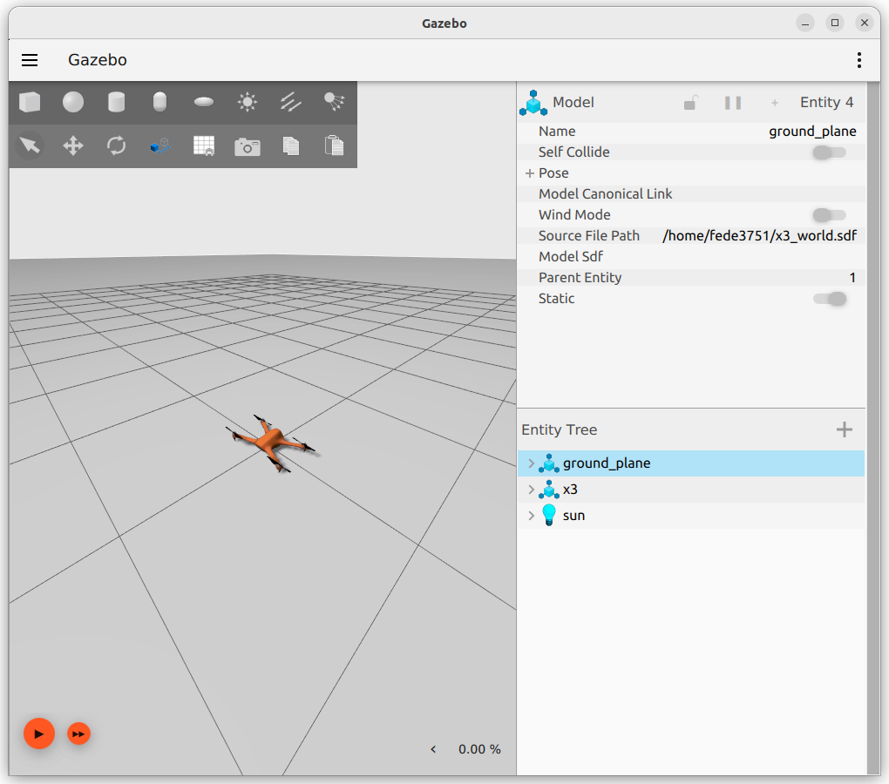
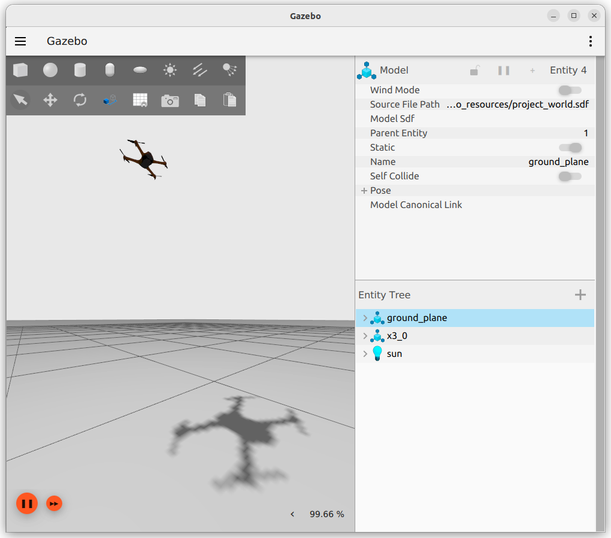
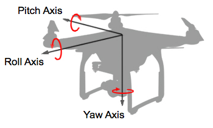
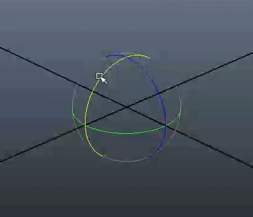
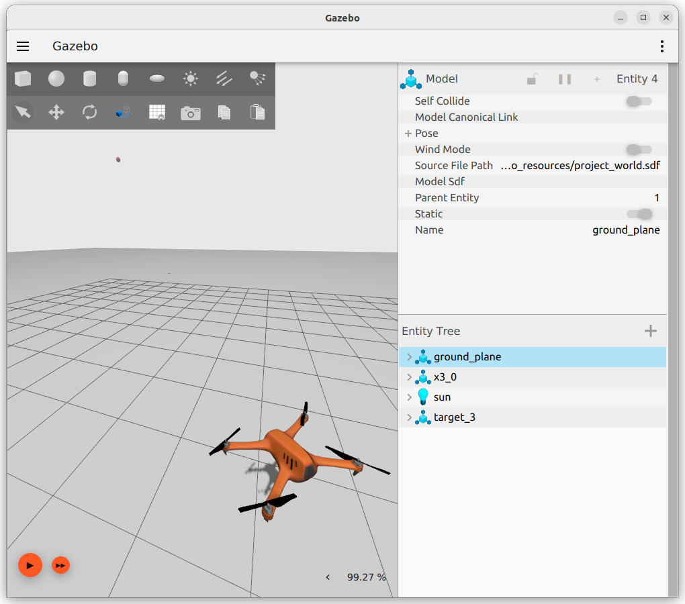

IoT Lab Lecture 6 - 20/04/2023
In this lecture, we are going to look on how you can pilot an X3 drone inside of Gazebo.
Taking as an example the solution from the patrolling turtle exercise, we will build a similar solution,
which also takes into account the 3rd dimension.
This lecture is going to be more interactive than usual, and will consist of different exercises one after
another.
Each exercise will start from where the previous left off, and shoud guide you through your first script
which controls an X3 drone.
There won't be any new ROS or Gazebo concepts explained here. All we have covered so far should have given you the basis
to do what we will cover in this lecture.
The math involeved is, though, a little bit more complicated than what we have seen so far, so it may be
helpful to see how everything is done with a dedicated lecture.
Exercise 8a - Groundplay for our Drone
Before getting into programming our drone. It would be a good idea to start modelling our world where
we will pilot our drone.
What to do:
-Import the proget multicopter_velocity_control.sdf, remove the X4 drone,
and save the project. This will be the world we will use to pilot our X3.
-Create a launch file to bridge the controls of X3
(there is one topic for cmd_vel and one for topic for odometry, take a look at your sdf
and the documentation of the plugins used to find which topics you will have to bridge).

Exercise 8b - Taking off
It's time for our drone to fly!
Here, you should start by implementing a function which allows the drone to reach a required altitude, when requested.
With the step before done, you should have already an odometry topic publishing the position of your drone
(remember that no coordinates are published if the simulation is not playing). Use what we have learnt so far with ROS commands to study the
interface it uses, and save those coordinates on your code!

Exercise 8c - Facing a point
Now it's time for our drone to rotate.
When requested, the drone should face a given point in space.
It is time here to talk about rotations in a 3D space.
Up until now, we have seen rotation only in a 2D plane.
Rotation on a plane have only one degree of freedom, which is on the z-axis, perpendicular to the plane.
In a 3D space, the possible rotations are instead three: yaw, pitch, and roll.

In the past lectures' exercises we have seen rotations applied to our beloved turtle. To do that, we used euler angles,
which are a mathematical structure familiar to all of us since highschool. It's what we always used.
In 3D spaces though, euler angles are usually not the best choice to describe rotations.
There are various reason for that, and if you're asking what they are, it is exactly what we are gonna answer here, before introducing
the commonly preferred alternative.
The good thing about euler angles is that they're intuitive: everyone can eyeball the extension of an angle with their hand just by
reading their values. The same thing cannot be said to other representations.
That end the good parts.
Euler angles are not pratical for describing rotations because they can be ambiguos: i.e, a rotation of -60° is,
after applied, equal to a rotation of 300°. Even if the state they end up is the same, the actual rotation performed
is considerably different.
This creates ambiguity in the euler angle representation, as equal angles may represent different rotations.
The other reason is that rotating objects using euler angles may lead to the loss of one degree of freedom.
This phenomenon, which is called "gimbal lock", happens when one rotation plane aligns with another.
The figure below may help you figure out what happens.
In order to prevent this phenomenon, appropriate rotations, with an external frame of reference,
have to be applied to "unlock" the rotating object.
Euler angles can be good to convey the information of an orientation, but not for the rotation that led to such orientation.

For these reasons (and more), in 3D spaces, rotations are usually described using another mathematical structure: quaternions.
By using only an additional variable, quaternions are able to accurately describe rotations in an unambiguous way, and allow
us to perform multiple rotations with simple moltiplicatons (simple for a machine, not for us).
I'm going to stop here. The math behind quaternions is really complex and approaching it can be a daunting task.
If you think you are going to work with 3D spaces in the future, it is imperative to understand quaternions and how they
perform rotations to a given direction vector, but, for the time being, it won't be necessary.
The truth is that, due to the way a quadcopter (just like our X3 drone) moves, at the end of the day the only rotation we are actively
able to controll is the yaw.
Drones perform pitch and roll rotations to move linearly, but those movements are performed automatically by our drone thanks to the
MulticopterVelocityControl plugin, which allows us to control the drone using the cmd_vel topic.
Linear movements that we send to it get automatically translated to proper rotations, which control the drone accordingly to our commands.
This leaves us with only the yaw angle to control, which makes all that mess that are 3D rotations with quaternions shockingly simple.
Do you want to rotate your drone? All you have to do is convert the rotation quaternion that our odometry
topic publishes to euler angles, and get the angle of the yaw axis. That's it!
The following function will take in input a quaternion, and return the corresponding angles on all three axis:
def euler_from_quaternion(x, y, z, w):
"""
Convert a quaternion into euler angles (roll, pitch, yaw)
roll is rotation around x in radians (counterclockwise)
pitch is rotation around y in radians (counterclockwise)
yaw is rotation around z in radians (counterclockwise)
"""
t0 = +2.0 * (w * x + y * z)
t1 = +1.0 - 2.0 * (x * x + y * y)
roll_x = math.atan2(t0, t1)
t2 = +2.0 * (w * y - z * x)
t2 = +1.0 if t2 > +1.0 else t2
t2 = -1.0 if t2 < -1.0 else t2
pitch_y = math.asin(t2)
t3 = +1.0 - 2.0 * (y * y + z * z)
t4 = +2.0 * (w * z + x * y)
yaw_z = math.atan2(t3, t4)
return roll_x, pitch_y, yaw_z # in radians
Use it to complete this part of the exercise!Good luck!
 If you want to know more about quaternions, these links will explain them to you way better than I could:
Visualizing quaternions (4d numbers) with stereographic projection
Quaternions and 3d rotation, explained interactively
Basic Intro to Quaternions for 3D Rotations
How quaternions produce 3D rotation
Conclusions
This ends the first part of this series of exercises.
The source for this first part of exercises is available here: lecture_6_src.zip
Good luck!